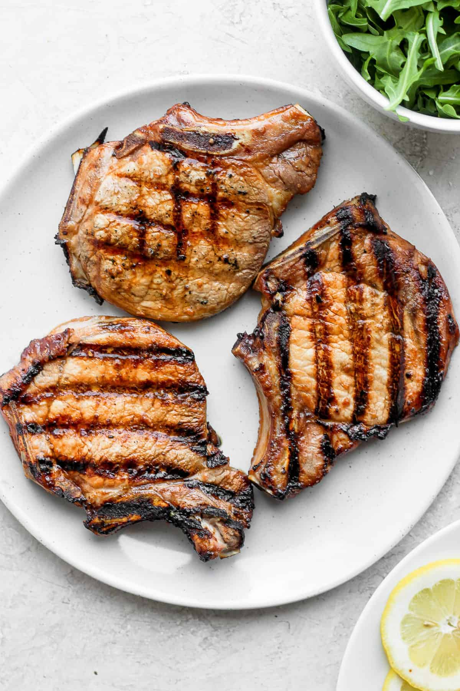

Porkchops

Pork chops can be a delicious and cheap way to eat. When cooked right they are juicy and tender and they don't empty your wallet the way a steak will. They can also be marinated to add some extra flavor but for this recipe we will be sticking with a simple dry rub seasoning but with a twist, we will be cooking them sous vide!
- Prep your pork chops for the sous vide bath. Pat them dry with a paper towel and then hit them with the seasoning of your choice. I like Pappy's Choice. The amount you use depends on how thick your porkchops are so don't skimp too much, you want a good covering.
- Now for the bath, prep your water container with your sous vide machine and make sure you have enough water to fully submerge your food. If you have a vacuum sealer then use that but if you don't we can use a freezer grade ziplock bag instead. If you use the ziplock bag simply put your meat into the bag and then seal it most of the way closed, you want about a finger sized hole left open. Then while being careful to keep the open section ABOVE the water, slowly submerge the rest of the ziplock bag with your meat down into the water. The pressure of the water will force air out of the bag and if you do it right and seal it with just the open section above the water you will end up with something that is almost as if you had vacuum sealed it.
- Set your sous vide machine to 160 degrees farenheit and then set a timer. The general rule is about an hour of submersion time per inch but for pork I like to go a little longer. For one and a half inch thich porkchops I would leave them in for 2 hours.
- The hard part is over, now we just wait and prep any other food in the meantime.
- Once the timer goes off begin prepping your cooking surface. If you're using a stovetop make sure your pan is very hot, if you're grilling then just get your grill preheated and hot. Take the porkchops out of the bath and bag, pat them dry and then throw them on your pan or grill. Give them the time they need for that perfect sear that YOU like and then they're done. Something to note, in this situation the pan is probably going to be much hotter than the grill so while it may only take 45-60 seconds on each side in the pan you may need a couple of minutes per side on the grill.
- Enjoy your perfect porkchops!